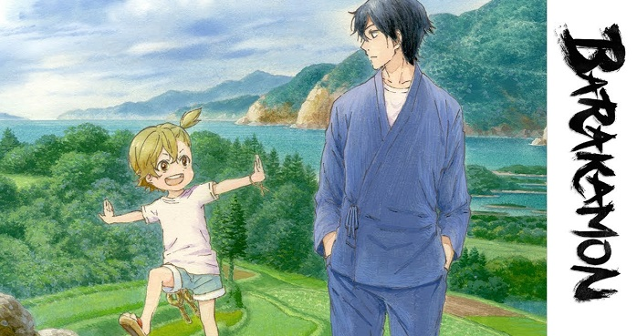

Mengenal Lebih Dekat Dengan Genre Slice of Life
Diposting oleh: Muhamad Trias Firmansyah, 09 Mei 2024

Apa arti dari kata "Slice of life"?
Jika diterjemahkan ke dalam bahasa indonesia, slice of life artinya potongan kehidupan. Dan cerita yang disajikan dari jenis genre ini yaitu mengisahkan cerita dari pengalaman yang biasa terjadi dalam kehidupan sehari-hari.
Karena berisikan cerita dari pengalaman hidup sehari-hari, alur hingga latar yang dibangun juga dibuat sama dengan lingkungan yang sudah kita kenal. Sehingga terlihat natural dan cukup ringan untuk diikuti, sehingga menjadi tontonan yang enak untuk bersantai
Salah satu contoh dari anime slice of life yaitu Barakamon. Anime ini menciptakan surga kecil di dunia yang penuh dengan hiruk pikuk kehidupan sehari-hari. Tema yang disajikan dalam anime ini menginspirasi penontonnya tentang bagaimana menemukan kembali hasrat dan mencari inspirasi dengan cara memperluas pandangan. Satu hal yang menjadi daya tarik utama dari anime ini adalah desain visual yang memukau dan detail